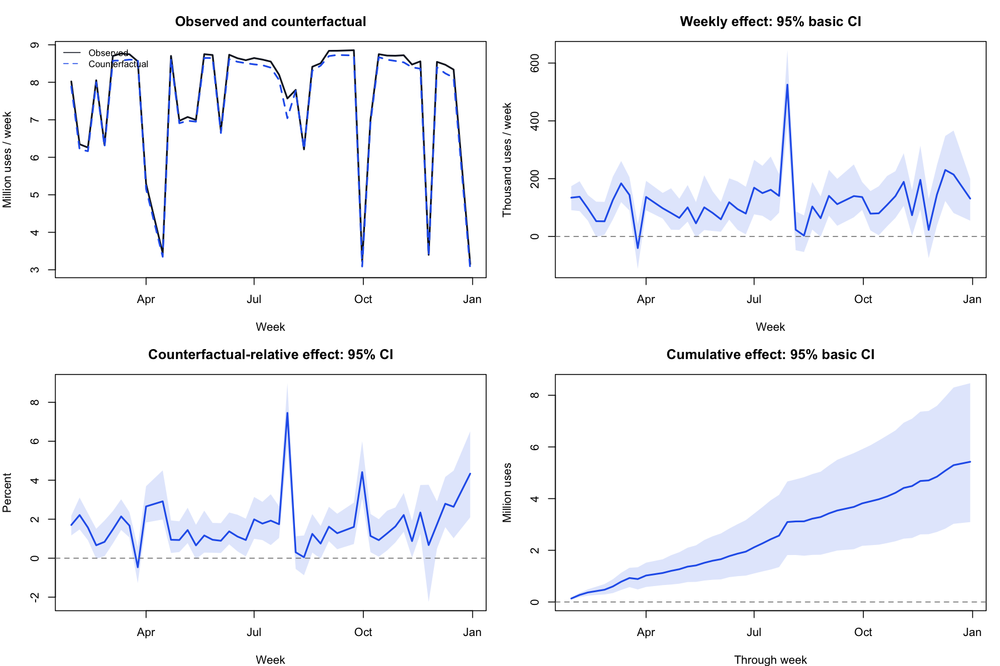

Within-Seoul transit gsynth r=4
2026-10-10 · raw ridership + log(origin-dong population) · no size weighting in estimation or aggregation
Summed over the 46 observed post-treatment weeks, the effect relative to the counterfactual is +1.568%; the 95% basic confidence interval from 1,000 OD bootstrap draws of the fixed specification is +0.939 to +2.429%.
1. Main table
| Measure | Point estimate | 95% basic bootstrap CI |
|---|
| Mean weekly ATT per OD (trips) | 288.4 | 164.4 ~ 450.1 |
| Total mean weekly effect (trips) | 117,958.7 | 67,222.0 ~ 184,072.9 |
| Cumulative 46-week effect (trips) | 5,426,100.8 | 3,092,212.3 ~ 8,467,351.2 |
| Effect vs counterfactual (%) | 1.568 | 0.939 ~ 2.429 |
409 treated ODs, 941 donors, 53 pre-period weeks. r=4, OD and time fixed effects, covariate log_pop. The effect rate is Σ(observed − counterfactual)/Σcounterfactual × 100, not a simple mean of per-OD ratios. Only the observed weeks in the analysis are summed; the cumulative figure is not scaled up to a full year.
2. Paths and effects

Intervals are pointwise, not simultaneous confidence bands. The observed/counterfactual plot covers the post-treatment period and should not be read as a pre-period fit plot. Vector PDF
3. Effects by window
| Window | Week start dates | Observed weeks | Effect (%) | 95% CI |
|---|
| Full post period, 46 weeks | 2024-01-29 ~ 2024-12-30 | 46 | 1.568 | 0.939 ~ 2.429 |
| Through August | 2024-01-29 ~ 2024-08-26 | 30 | 1.444 | 0.870 ~ 2.244 |
| Excluding December | 2024-01-29 ~ 2024-11-25 | 42 | 1.478 | 0.866 ~ 2.344 |
| First 12 observed weeks | 2024-01-29 ~ 2024-04-22 | 12 | 1.399 | 0.862 ~ 2.101 |
| First 24 observed weeks | 2024-01-29 ~ 2024-07-15 | 24 | 1.336 | 0.739 ~ 2.166 |
| First 36 observed weeks | 2024-01-29 ~ 2024-10-14 | 36 | 1.459 | 0.876 ~ 2.300 |
Every row uses the same model fitted on the full panel and the same 1,000 draws. These are not refits on panels truncated at August; comparisons across windows are exploratory. Dates are week start dates, so a month-end week can spill into the next month. Excluded holiday weeks were neither restored nor extrapolated.
4. Monthly effects
| Month (by week start) | Weeks | Effect (%) | 95% CI |
|---|
| 2024-01 | 1 | 1.702 | 1.167 ~ 2.182 |
| 2024-02 | 4 | 1.275 | 0.730 ~ 2.028 |
| 2024-03 | 4 | 1.203 | 0.595 ~ 1.982 |
| 2024-04 | 4 | 1.582 | 0.968 ~ 2.546 |
| 2024-05 | 4 | 1.052 | 0.429 ~ 2.042 |
| 2024-06 | 4 | 1.089 | 0.420 ~ 2.098 |
| 2024-07 | 5 | 2.835 | 2.028 ~ 3.763 |
| 2024-08 | 4 | 0.629 | -0.128 ~ 1.488 |
| 2024-09 | 4 | 1.808 | 1.066 ~ 2.887 |
| 2024-10 | 4 | 1.245 | 0.520 ~ 2.262 |
| 2024-11 | 4 | 1.678 | 0.720 ~ 2.758 |
| 2024-12 | 4 | 2.594 | 1.466 ~ 3.963 |
5. Pre-period diagnostics and rank sensitivity
| Held-out pre-period | r | Total RMSPE (trips/week) | Placebo effect (%) |
|---|
| 4 weeks | 1 | 338,003.7 | 4.238 |
| 4 weeks | 4 | 37,489.3 | 0.488 |
| 8 weeks | 1 | 251,125.6 | 2.241 |
| 8 weeks | 4 | 66,334.7 | 0.563 |
| r | CV criterion | ATT (trips/OD/week) | Effect (%) | Bootstrap draws |
|---|
| 1 | MSPE_1se | 50.63 | 0.272 | 0 |
| 4 | GMSPE_1se | 288.41 | 1.568 | 1000 |
With r=4 the summed prediction error of the treated ODs over the held-out last 4 and 8 pre-period weeks was smaller than with r=1. The two hold-outs overlap and are not independent validation. Choosing r was a data-driven process comparing MSPE, GMSPE and pre-period diagnostics. A pre-period placebo effect of about +0.5% remains. This table has no formal placebo or equivalence test p-values, and there is no r=1 confidence interval yet.
6. Effects by size — point estimates only
| Pre-period size quintile | ODs | Total mean weekly effect (trips) | vs counterfactual (%) |
|---|
| 1 | 81 | 1,213.6 | 5.863 |
| 2 | 82 | 2,562.9 | 2.244 |
| 3 | 82 | 8,482.4 | 1.786 |
| 4 | 82 | 30,068.5 | 1.769 |
| 5 | 82 | 75,631.4 | 1.451 |
Of the 409 ODs, 331 have a positive mean effect and 78 a negative one. Quintiles are fixed by pre-period use_pre rank. This does not imply statistical significance for subgroups or units. Individual effect estimates are highly uncertain, so they should not be read as a ranking of policy effects by area.
7. Negative predictions and scope of inference
Of 18,814 post-period cells, 119 (in 10 ODs) have a negative counterfactual. They sum to −1,413.59 trips, small relative to the total counterfactual of about 346.09 million. Truncating them at zero as an influence check changes the effect from 1.56782% to 1.56741%. The reported result keeps the original values.
Whole OD time series were resampled separately within the treated and control groups. r and the specification were held fixed, so selection uncertainty is not included. An OD-level bootstrap alone cannot be claimed to handle additional residual dependence across ODs. The assumption that population is a control variable rather than a mediator of the policy also needs a separate argument.
8. Suggested manuscript wording
In a generalised synthetic control model (r=4) using raw ridership and log origin-dong population, within-Seoul public transport ridership over the 46 analysed post-treatment weeks is estimated to be about 1.57% higher than the summed counterfactual (1,000 OD bootstrap draws, 95% basic CI: 0.94–2.43%). The summed increase is about 118,000 trips per week on average and about 5.43 million over the observed period. The number of factors was chosen by comparing the rolling-CV MSPE and GMSPE criteria with pre-period hold-out diagnostics for the treated ODs, and the r=1 result under the MSPE criterion is reported alongside as a sensitivity analysis.
The model and inference limitations must be stated alongside this wording. No bias correction subtracting the +0.5% pre-period placebo effect from the post-period effect was applied. Replacing only this number in the tables, maps and cost calculations of the earlier log_pc / size-weighted result (+5.71%) would mix units and estimands.
9. Files and open items
Items needing separate runs: bootstrap CI for r=1, uncertainty/equivalence tests for the pre-period placebo, subgroup inference. The manuscript, heterogeneity maps and carbon/cost-benefit calculations had not yet been updated at the time of this report.
PATCHED_local_weight_v2_cvmax_v1_audit_v1_fect2.4.7_h748c651816_srce78b1e9155